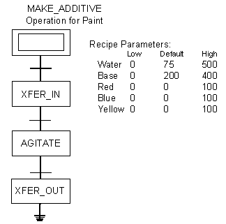
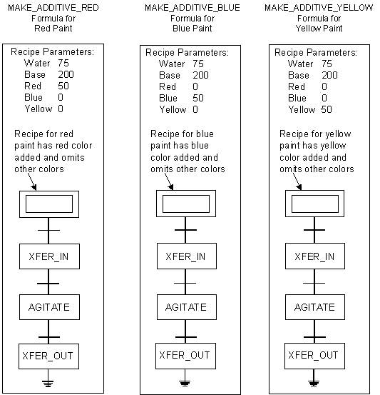

Recipe parameters and formulas
Certain phase parameters are set at the operation level in order to define the characteristics of the operation. For example, you can define the parameter CIP_MODE of the phase ADD_WATER to OFF for the operation ADD_INGREDIENTS. Other parameters are likely to change depending on the recipe formulation, for example, WATER_AMOUNT might vary depending on the type of paint being made.
Phase parameters are step parameters at the operation level. Where you need to change a phase parameter from a higher recipe level, add a recipe parameter to the operation and defer the phase parameter to it. Where you need to pass a phase parameter value to a higher recipe level, add a recipe parameter to the operation and refer the phase parameter to it.
By including a recipe parameter in an operation, you make the operation generic and reusable because the recipe parameter acts as a placeholder for specific values. Recipe parameters also override the default value in a phase and let you specify any value you need depending on the batch in production. Once a value is specified, the value is passed to the phase.
The entire set of recipe parameters in a recipe that is the top-level recipe can be set to a consistent set of values by using a recipe formula. A formula is a set of parameter values (usually given a name) that must be adjusted to create different formulations of the product.
For example, the operation MAKE_ADDITIVE is used to create paint color additive. However, the values for each ingredient vary depending on the color wanted. In order to use the operation MAKE_ADDITIVE for all the paint colors, the phase parameters are deferred to recipe parameters. As recipe parameters, the maximum, minimum and default amounts for each ingredient are defined.

These recipe parameter values can be deferred to a formula and the values set according to the color's requirements. When this operation is called in a higher level recipe, such as a unit procedure or procedure, the formula is selected based on the color of the additive needed. Formula values can be adjusted at run time by the operator.

You can enforce formula selection at batch creation in a top-level recipe. This is set in the recipe's Properties dialog. When set, the operator must select a formula to create the batch. You can configure the recipe to have a default enforced formula. Therefore, at batch creation, a formula is already selected (but can be changed by the operator if needed).